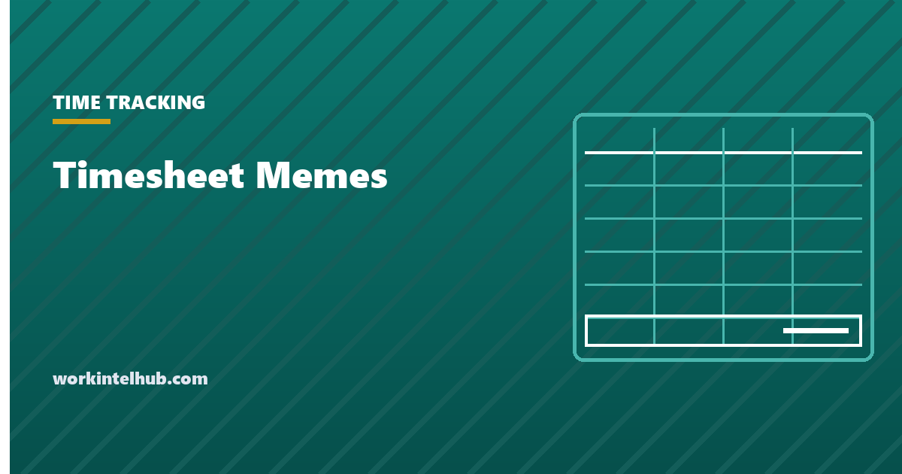

Timesheet Memes

Nobody likes timesheets. Not the people who fill them in from memory at 4:58 on Friday, not the managers who approve forty of them in five minutes, and not payroll, who fix what both groups sent. The one thing everyone agrees on is that it is funny, in the way that things you cannot escape are funny. This page is 56 original timesheet memes about the reminder, the reconstruction, the rounding, the software, the approval queue and the people who have to make the numbers add up.
Every image is free to share and made here, so there is no watermark from a meme site and nothing to credit. There is a meme maker further down for your own captions, and at the end, for the managers reading this on a Friday afternoon, the short version of what actually gets timesheets in on time.
The Friday reminder (7)
Every timesheet story starts the same way: a reminder that calls itself gentle, a deadline that is somehow always today, and a person who was definitely going to do it earlier.


Filling it in from memory (8)
The timesheet asks what you did on Wednesday. Wednesday has no comment. What follows is less a record than a reconstruction, and everyone involved knows it.


Rounding and the six-minute increment (6)
Once time is billed in tenths and quarters, arithmetic becomes a personality trait. The people who log 0.1 for reading an email are not wrong. They are just further along.


Contractors, consultants and the billable hour (7)
For anyone who invoices by the hour, the timesheet is not admin. It is the product, and the line between diligence and creativity is roughly 0.1 hours wide.


Managers and the approval queue (7)
Somebody has to approve all of this. That somebody has forty of them, five minutes, and a rule that says nobody gets paid until they are done.


The timesheet software (6)
The system was bought to make this easier. The system has a 412-item dropdown, a session timeout and a confirmation dialog that asks if you are sure.


Remote and hybrid (5)
Working from home moved the timesheet from a mild fiction to a philosophical question. Which hours count, and does the camera being off change the answer?


Payroll's side of it (6)
Every one of these memes lands on someone's desk on Monday morning. Payroll fixes four hundred timesheets a week and hears about the one they did not.


The rare wholesome ones (4)
Somewhere there is a person who submits on Monday for the week ahead. Nobody knows what they are like at parties, because nobody has invited them to one.


Make your own timesheet meme
Runs entirely in your browser; the photo never leaves your device. Text uses the classic Impact style where the font is installed and a bold fallback elsewhere.
Why timesheets are late, and what actually fixes it
The jokes have a common root. Timesheets are late because they are filled in from memory, and memory of a working week decays within a day; they are inaccurate for the same reason; and they are resented because the person filling them in gets nothing back for the effort. Reminders address the symptom. Three changes address the cause.
- Make the record daily and tiny. Two minutes at the end of each day beats twenty minutes of reconstruction on Friday. A printed weekly timesheet template on the desk, or the spreadsheet version pinned in a tab, works because it is in view when the day ends.
- Send reminders that carry the deadline and the consequence. "Timesheets by 3 PM Friday; late sheets are paid next cycle" gets sheets in. "Gentle reminder :)" gets memes. The reminder guide has the schedule and the wording that works, and the point at which a reminder should stop being gentle.
- Automate what can be captured. Clock-ins, project switches and calendar time can be recorded without anyone typing. The automation guide covers what to automate first, and the manual versus automatic comparison explains why automatic capture is more accurate and less trusted, and how to get both.
The rounding jokes have a legal footnote: US employers may round to the nearest quarter hour only if the rounding is neutral over time, and the time card calculator works in exact minutes for that reason. The mouse jiggler meme has a footnote too: activity metrics and timesheets that disagree are a conversation, not a verdict, and the mouse jiggler guide explains why. And the "historical reconstruction" meme sits next to a real number: the time theft statistics page shows how much of what gets called time theft is really bad timesheet process.
Using these memes
All 56 memes on this page are original and free to use: paste one into the Friday reminder, drop one in the team channel, put one on the slide before the timesheet policy. A link back to this page is appreciated but not required, and the download button on any image works without an account. The meme maker above produces the same 800 by 800 format with your own text, and the images carry no tracking.
One note for managers: a meme in the reminder works once, maybe twice. By the third week it is the gentle reminder with a smiley, and there is a meme about that too. The fix for late timesheets is in the section above; the memes are for the Friday when you have already sent it.
Key takeaways
- Fifty-six original timesheet memes in nine themes: reminders, memory, rounding, billable hours, managers, software, remote work, payroll and the rare wholesome one.
- All images are free to share with or without a link back; the meme maker produces your own in the same format.
- Timesheets are late because they are filled in from memory. Daily two-minute entries, reminders with a deadline and a consequence, and automatic capture fix the cause.
- Quarter-hour rounding is lawful only when neutral over time; exact minutes avoid the argument.
- A meme in the reminder works once. The fix is the process, not the joke.
Frequently asked questions
Can I use these timesheet memes at work?
Yes. All 56 are original to WorkIntel Hub and free to share in messages, slides and reminders, with or without a link back. Right-click or long-press any image to save it, or use the meme maker on this page to put your own text on the same format.
Why does everyone hate timesheets?
Because they are filled in from memory after the fact, which is slow and inaccurate, and because the person filling them in usually gets nothing back for the effort. The dislike is about the process, not the principle: people who record time daily in two minutes rarely complain about it.
How do I get my team to submit timesheets on time?
Move the entry to daily rather than weekly, send one reminder that states the deadline and what happens to late sheets, approve quickly so people see the sheet matters, and automate whatever can be captured without typing. The timesheet reminder guide on this site covers the schedule and wording.
Is it okay to send a meme with the timesheet reminder?
Once or twice, yes; it softens a message people resent. Repeated every week it becomes the gentle-reminder-with-a-smiley that the memes on this page are about. Pair the joke with a clear deadline and a real consequence, and change the process if the same people are always late.
Are the rounding jokes accurate?
Roughly. US federal rules allow rounding to the nearest quarter hour if it is neutral over time, so minutes 1 to 7 round down and 8 to 14 round up. Several states and courts have limited the practice where exact records exist, which is why most employers now pay to the minute.
Can I make my own timesheet meme here?
Yes. The meme maker on this page draws top and bottom text in the classic style over a colour background or your own photo, entirely in your browser, and the download button saves an 800 by 800 PNG. Nothing is uploaded.